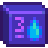

Szigeti kereskedő

|
Hiányos fordítás Ezt a cikket vagy szakaszt nem fordították le teljesen magyarra. Üdvözlünk az oldal fordításával. |
| Island Trader | |
 | |
 | |
| Nyitvatartás: | Always |
| Cím: | Gyömbérsziget |
| Lakók: | |
The Island Trader is a bluebird merchant located on the North side of Ginger Island. Like the Desert Trader, the Island Trader does not accept gold but only barters in exchange for other items.
The Island Trader is unlocked for  10 Golden Walnuts after purchasing the Island Farmhouse.
10 Golden Walnuts after purchasing the Island Farmhouse.
Állandó Készlet
| Kép | Név | Leírás | Ár |
|---|---|---|---|
| Warp Totem: Farm | Rögtön a házadhoz teleportál. Használat után eltűnik. | ||
| Taro Tuber | Ezeket meleg időjárásban ültesd el. 10 napig tart megérniük. Gyorsabban növekszik, ha egy víztest közelében ültetik. | ||
| Pineapple Seeds | Ezeket meleg időjárásban ültesd el. 14 napig tart megérniük, de utána tovább termeli a gyümölcsét. | ||
| Golden Coconut | Ez aztán a kemény dió, de talán egy profi képes lehet feltörni.
(Only available after cracking at least one Golden Coconut) |
||
 |
Tropical TV | Ez a házadba is helyezhető. | |
| Jungle Torch | Ez a házadba is helyezhető. | ||
| Banana Sapling | 28 nap múlva érik meg, és banánfa lesz belőle. Nyáron hoz gyümölcsöt, vagy egész évben, hogyha a Gyömbér szigeten ülteted el. | ||
| Mango Sapling | 28 nap múlva érik meg, és mangófa lesz belőle. Nyáron hoz gyümölcsöt, vagy egész évben, hogyha a Gyömbér szigeten ülteted el. | ||
 |
Wild Double Bed | Ez a házadba is helyezhető. | |
 |
Tropical Bed | Ez a házadba is helyezhető. | |
| Mahogany Seed | Ezt rakd a farmodra, hogy mahagóni fát ültess. | ||
| Luau Skirt | |||
| Banana Pudding Recipe | Egy recept, amiből ez készíthető: Banana Pudding | ||
 |
Deluxe Retaining Soil Recipe | Egy recept, amiből ez készíthető: Deluxe Retaining Soil |
Cserédőlő Ajánlatok
The Galaxy Soul item is made available to the trader's stock only after the player completes the task of killing at least 50 monsters beyond any of those required to satisfy Qi kihívásai. After that, it is only available on the last day of the season.
| Kép | Név | Leírás | Ár | Elérhető |
|---|---|---|---|---|
| Tropical Chair | Ez a házadba is helyezhető. | Páros napokon az évszakban | ||
 |
Small Cap | Minden Hétfőn | ||
| Palm Wall Ornament | Ez a házadba is helyezhető. | Minden Kedden | ||
| Bluebird Mask | Minden Szerdán | |||
 |
'Volcano' Photo | Ez a házadba is helyezhető. | Minden Csütörtökön | |
 |
Deluxe Cowboy Hat | Minden Pénteken | ||
 |
Oceanic Rug | Ez a házadba is helyezhető. | Minden Szombaton | |
| Tropical Double Bed | Ez a házadba is helyezhető. | Minden Vasárnap | ||
| Galaxy Soul | Kovácsolj 3 darabot egy Galaxis fegyverbe, hogy elérje végleges formáját.
(Available after killing at least 50 veszélyes szörnyek.[1]) |
Az évszak utolsó napján |
References
- ↑ See Locations.IslandNorth::getIslandMerchantTradeStock in the game code.
History
- 1.5: Introduced.
| Épületek | ||
|---|---|---|
| Kereskedők | Ácsműhely • A Varázsló tornya • Jégkrémstand • Halbolt • Harvey klinikája • Hullócsillag szalon • JojaMart • Kalandorok céhe • Kaszinó • Kovács • Könyvkereskedő • Marnie tanyája • Oázis • Óriási tönk • Pierre boltja • Qi diós szobája • Romos ház • Sivatagi kereskedő • Szigeti kereskedő • Utazó szekér • Vulkáni törpe | |
| Házak | Elliott faháza • Faház • Folyó út 1 • Folyó út 2 • Fűzfa köz 1 • Fűzfa köz 2 • Hegyi út 24 • Lakókocsi • Leah kunyhója • Parasztház • Polgármester háza • Sátor | |
| Farm épületek | Gazdálkodás | Csűr • Halastó • Háziállat tálka • Istálló • Istálló (ló) • Kunyhó • Kút • Malom • Ragacsketrec • Raktár • Siló • Üvegház |
| Különleges | Arany óra • Farm obeliszk • Föld obeliszk • Junimo kunyhó • Sivatagi obeliszk • Sziget obeliszk • Víz obeliszk | |
| Egyéb | Boszorkány kunyhója • Fürdő • Joja raktárépület • Közösségi központ • Kutya karám • Mozi • Múzeum • Szigeti iroda | |